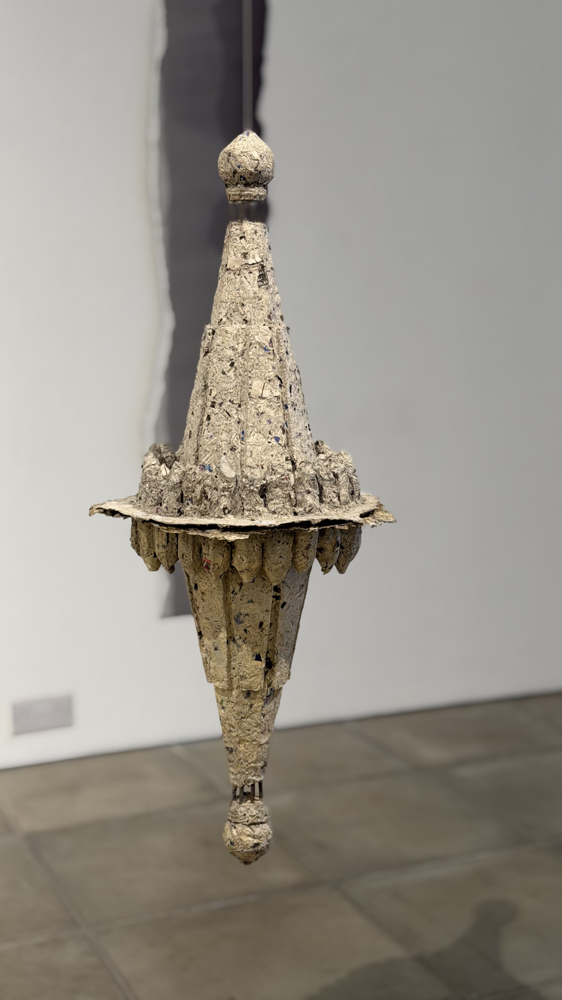
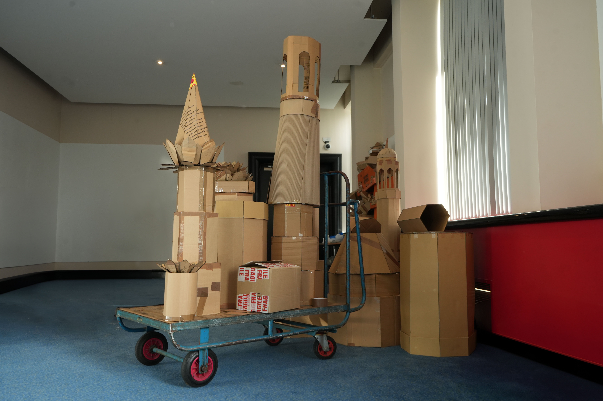
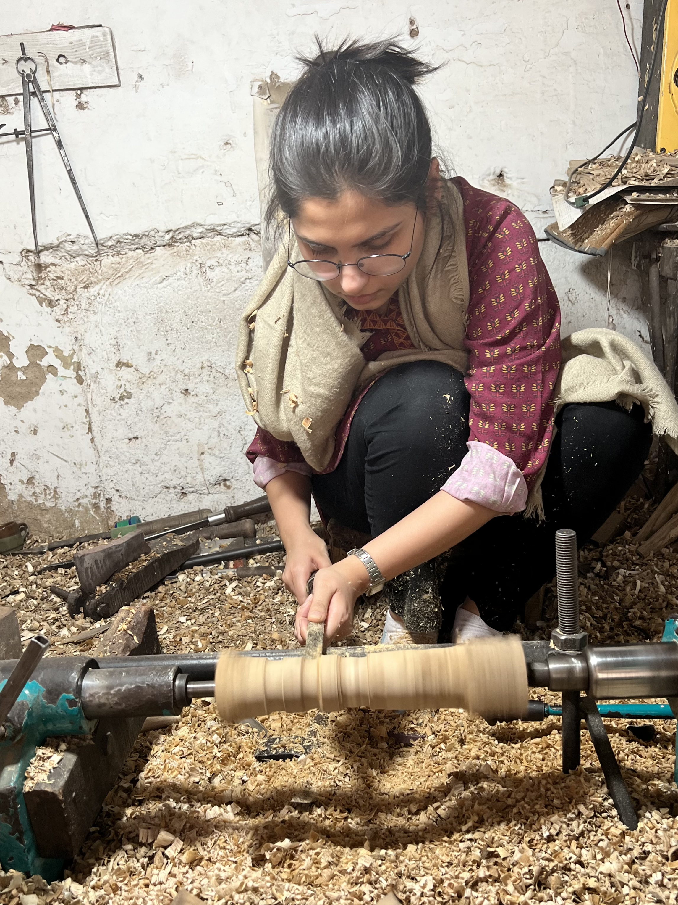
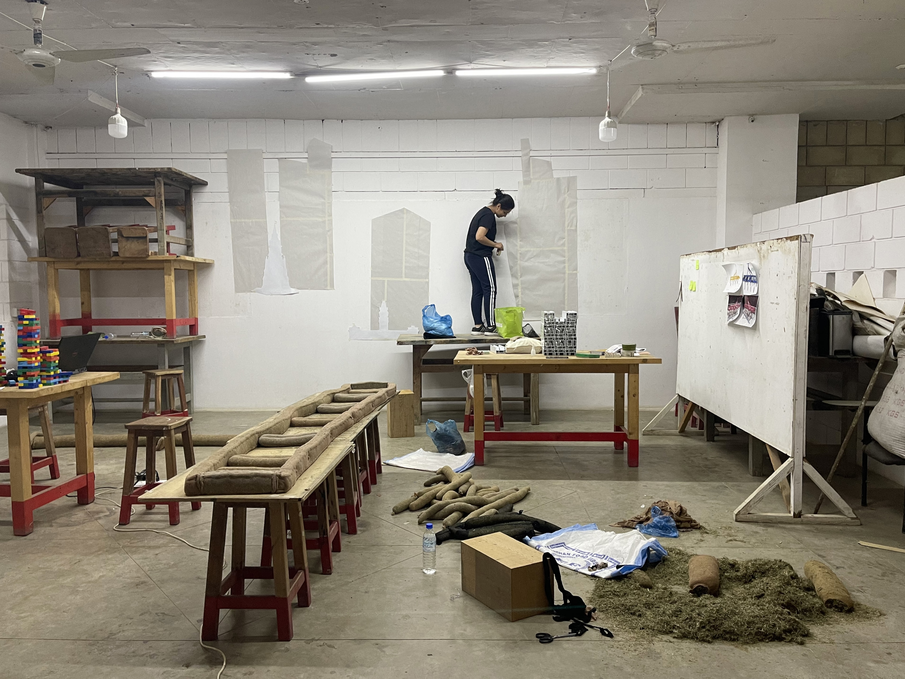

Artist Portfolio
Anusha Ramchand
Multidisciplinary practice exploring space, migration, identity and belonging.
Multidisciplinary practice exploring space, migration, identity and belonging.






Anusha Ramchand (b. 1995, Hyderabad, Pakistan) is a multidisciplinary artist based between Karachi and the UK. She completed her MA at Arts University Bournemouth, UK, and BFA from the National College of Arts, Lahore, Pakistan.
Her practice engages with space, migration, identity, and belonging through constructed environments that hold memory, absence, and possibility. Informed by her experience of movement and cultural displacement, her work reflects an ongoing process of becoming — creating spaces in which notions of home, faith, and self can coexist.



